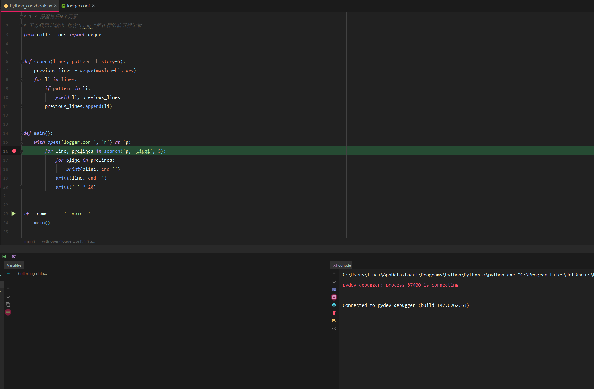
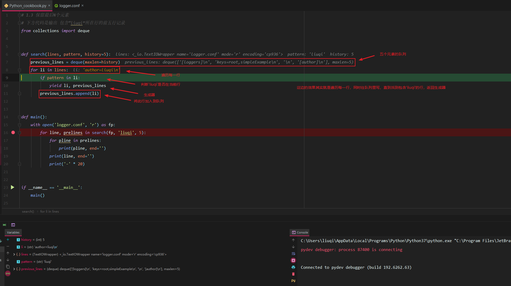
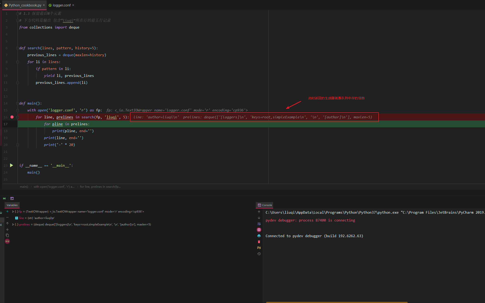
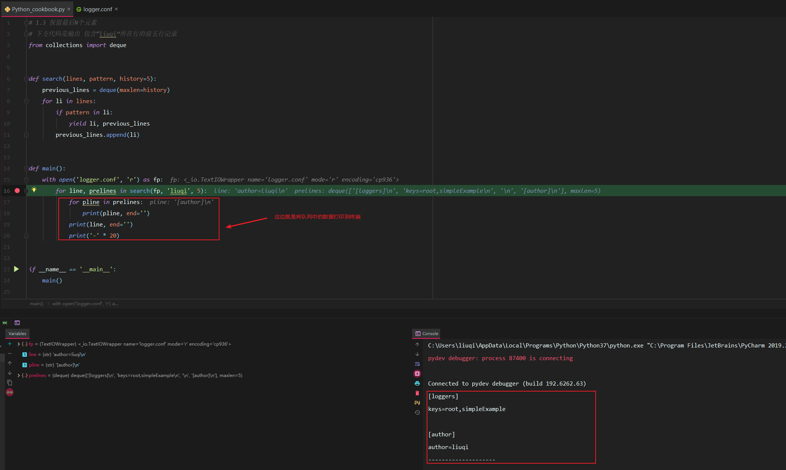
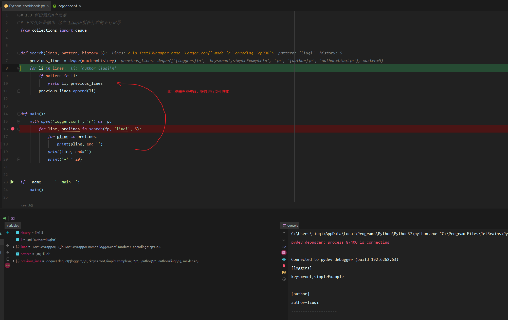

保留最后N个元素
模块
from collections import deque
功能
collections 是 python 内建的一个集合模块，里面封装了许多集合类，其中队列相关的集合只有一个：deque。 deque 是双边队列（double-ended queue），具有队列和栈的性质，在 list 的基础上增加了移动、旋转和增删等
常用方法
d = collections.deque()
| 函数 | 功能简介 |
|---|---|
| d.append(‘a’) | 在最右边添加一个元素，此时 d=deque(‘a’) |
| d.appendleft(‘b’) | 在最左边添加一个元素，此时 d=deque([‘b’, ‘a’]) |
| d.extend([‘c’,’d’]) | 在最右边添加所有元素，此时 d=deque([‘b’, ‘a’, ‘c’, ‘d’]) |
| d.extendleft([‘e’,’f’]) | 在最左边添加所有元素，此时 d=deque([‘f’, ‘e’, ‘b’, ‘a’, ‘c’, ‘d’]) |
| d.pop() | 将最右边的元素取出，返回 ‘d’，此时 d=deque([‘f’, ‘e’, ‘b’, ‘a’, ‘c’]) |
| d.popleft() | 将最左边的元素取出，返回 ‘f’，此时 d=deque([‘e’, ‘b’, ‘a’, ‘c’]) |
| d.rotate(-2) | 向左旋转两个位置（正数则向右旋转），此时 d=deque([‘a’, ‘c’, ‘e’, ‘b’]) |
| d.count(‘a’) | 队列中’a’的个数，返回 1 |
| d.remove(‘c’) | 从队列中将’c’删除，此时 d=deque([‘a’, ‘e’, ‘b’]) |
| d.reverse() | 将队列倒序，此时 d=deque([‘b’, ‘e’, ‘a’]) |
在迭代操作或者其他操作的时候，怎样只保留最后有限几个元素的历史记录？
代码
1 | # 下方代码是输出 包含“liuqi”所在行的前五行记录 |
使用 deque(maxlen=N) 构造函数会新建一个固定大小的队列。当新的元素加入并且这个队列已满的时候， 最老的元素会自动被移除掉
Pycharm debug流程
加入断点

logger.conf

search流程

search返回生成器

终端效果

一个生成器完成后

这边我只显示了搜索到一次‘liuqi’时的效果
注：本文使用的实例代码，参考自《python cookbook 第三版》